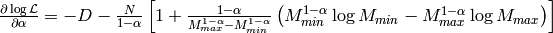

Convexity of the Salpeter problem¶
The Salpeter problem is neither a linear nor a least-squares problem. Let us check if it is a convex problem!
For Hamiltonian Monte-Carlo, we have already computed the gradient of the log-likelihood, which is our objective function:

As we only have a single fit parameter -  - the Hessian is a 1x1 matrix and its single eigenvalue is:
- the Hessian is a 1x1 matrix and its single eigenvalue is:
If the Salpeter problem is convex, this eigenvalue has to be negative. Is it negative?
By definition, we have and .
Therefore, as long as , the first two terms in brackets are always strictly positive.
For , also the third term is strictly positive because .
For , the third term may in fact become negative. However, for and , the eigenvalue is still strictly negative at least until .
We conclude that for and and for all and the eigenvalue of the Hessian is always strictly negative. In other words, in our case the Salpeter problem is convex, i.e., the log-likelihood function has only a single maximum which is therefore the global maximum.
Obviously, we could simply use a gradient method - ideally Newton’s method (we already have computed gradient and Hessian!) - in order to find the maximum quickly. Nevertheless, the Monte-Carlo methods also directly provide us with uncertainty estimates.
This is a very rare example, where a non-trivial problem can be directly tested for convexity.